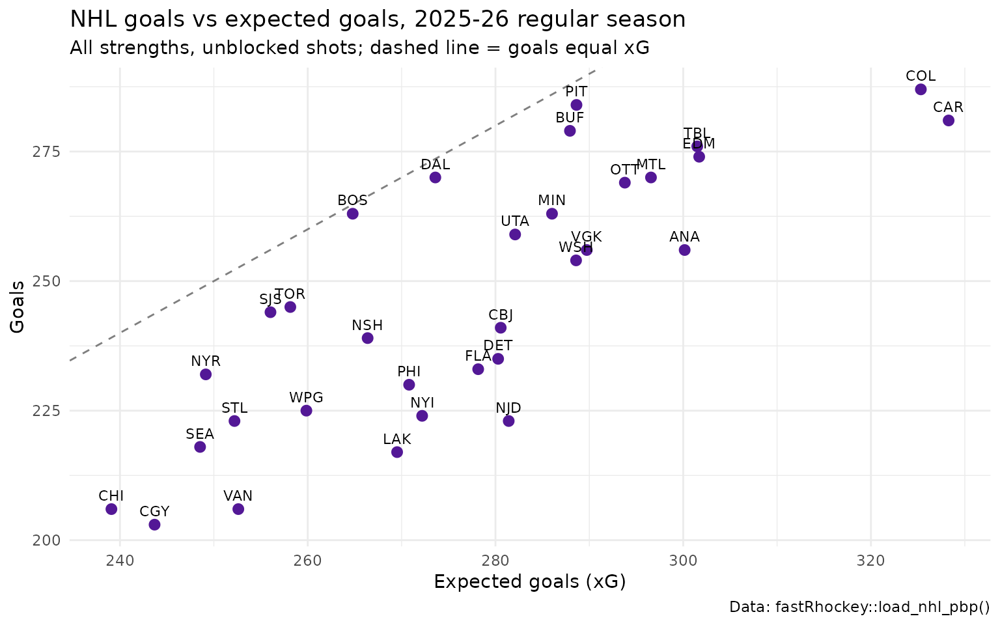

Getting Started with fastRhockey: NHL, PWHL and Hockey Data in R
Ben Howell,
Saiem Gilani


Source: vignettes/introduction.Rmd
introduction.RmdfastRhockey
is an R package that turns public hockey data into tidy data
frames. It covers the NHL (National Hockey
League), the PWHL (Professional Women’s Hockey League),
the AHL and the three Canadian major-junior leagues (OHL, WHL, QMJHL),
thirteen European leagues, and NCAA men’s and women’s college hockey
through ESPN. You get play-by-play, shifts, box scores, schedules,
standings, rosters, draft and player data, plus expected goals
(xG) for every NHL and PWHL shot.
fastRhockey is part of the SportsDataverse, a family of R
and Python packages for sports analytics.

What you’ll learn
By the end of this guide you will be able to:
- install R, RStudio and
fastRhockey; - understand how the package’s functions are named, so you can find the right one for any league;
- load a full NHL season of play-by-play in one line, summarise it
with
dplyr, and draw your first chart withggplot2; - load PWHL play-by-play the same way;
- read the hockey analytics vocabulary (Corsi, Fenwick, xG, PDO, strength states and more) used in the rest of the documentation.
Every number on this page is computed from the data when the page is built, so it stays current.
How do I install R, RStudio and fastRhockey?
1. Install R. Download R for your operating system from CRAN and run the installer.
2. Install RStudio (optional but recommended). RStudio Desktop is a free editor for R. Positron or VS Code also work.
3. Install fastRhockey. Open R or
RStudio and run one of these.
The released version from CRAN:
install.packages("fastRhockey")The development version from GitHub, which has the newest functions:
if (!requireNamespace("pak", quietly = TRUE)) {
install.packages("pak")
}
pak::pak("sportsdataverse/fastRhockey")4. Install the helper packages used in this guide.
dplyr and ggplot2 are for data wrangling and
plots, sportyR and sdvplotR draw rinks, and
xgboost lets you compute NHL xG yourself. None of these are
required to use fastRhockey.
install.packages(c("dplyr", "ggplot2", "sportyR", "xgboost"))
pak::pak("sportsdataverse/sdvplotR")How is fastRhockey organised?
Every function name starts with a prefix that tells you the league and the data source. Once you know the prefix, the function reference groups everything else.
| Prefix | League and source | Calls the internet? | Reference section |
|---|---|---|---|
load_nhl_*() |
NHL full seasons (2010 onward), pre-built files on GitHub releases | GitHub only | NHL Data Loaders |
load_pwhl_*() |
PWHL full seasons (2024 onward), pre-built files on GitHub releases | GitHub only | PWHL Data Loaders |
nhl_*() |
NHL live APIs (api-web.nhle.com,
api.nhle.com/stats, NHL Edge, NHL Records) |
Yes | NHL Data |
pwhl_*() |
PWHL live HockeyTech feed | Yes | Professional Women’s Hockey League |
ahl_*(), ohl_*(), whl_*(),
qmjhl_*()
|
AHL and Canadian major-junior HockeyTech feeds | Yes | AHL, OHL, WHL, QMJHL |
espn_nhl_*(), fox_nhl_*()
|
NHL from ESPN and Fox Sports | Yes | ESPN NHL |
espn_mch_*(), espn_wch_*()
|
NCAA men’s and women’s college hockey from ESPN | Yes | ESPN College Hockey |
del_*(), shl_*(), liiga_*(),
khl_*(), … |
Thirteen European leagues | Yes | European Hockey |
helper_nhl_calculate_xg(),
refresh_xg_models()
|
NHL expected-goals model | Model files only | Helpers |
phf_*(), load_phf_*()
|
The defunct PHF (formerly NWHL). These stop with an error. | No | Deprecated PHF Functions |
Which should you use? Start with the
load_*() loaders. They read one file per season from the sportsdataverse-data
releases, so a whole season arrives in seconds, the files are
already cleaned, and NHL and PWHL play-by-play come with xG attached.
Use the live functions when you need today’s games, a league the loaders
don’t cover, or an endpoint (player bios, standings snapshots, NHL Edge
tracking) that isn’t in a loader.
Seasons are end years. seasons = 2026
means the 2025-26 season, in every league.
How do I load a full NHL season of play-by-play?
load_nhl_pbp() returns one row per event: faceoffs,
hits, shots, goals, penalties, stoppages and line changes, with the
skaters on the ice for each.
library(fastRhockey)
library(dplyr)
library(ggplot2)
nhl_pbp <- load_nhl_pbp(seasons = 2026)
dim(nhl_pbp)
#> [1] 1100073 94That is 1,100,073 events from 1,395 games. The columns you will use most:
-
event_type: what happened (SHOT,GOAL,MISSED_SHOT,BLOCKED_SHOT,HIT,FACEOFF,CHANGE, …). -
event_team_abbr: the team credited with the event. ForBLOCKED_SHOTthis is the blocking team, not the shooting team. -
strength_state: skaters on the ice from the event team’s point of view, such as"5v5"or"5v4". -
x,y,x_fixed,y_fixed,shot_distance,shot_angle: where the event happened, in feet from centre ice. -
xg: the expected-goals value of each unblocked shot. -
home_on_1…away_on_7,home_goalie,away_goalie: who was on the ice.
nhl_pbp %>%
count(event_type, sort = TRUE) %>%
head(10)
#> # A tibble: 10 × 2
#> event_type n
#> <chr> <int>
#> 1 CHANGE 656504
#> 2 FACEOFF 78491
#> 3 SHOT 69507
#> 4 STOP 61160
#> 5 HIT 59279
#> 6 BLOCKED_SHOT 43664
#> 7 GIVEAWAY 42970
#> 8 MISSED_SHOT 41811
#> 9 TAKEAWAY 12878
#> 10 PENALTY 10496Summarise it: goals and expected goals by team
Here we keep regular-season unblocked shots, then add up actual goals and expected goals for each team.
team_xg <- nhl_pbp %>%
filter(season_type == "R", !is.na(xg)) %>%
group_by(team = event_team_abbr) %>%
summarise(
shots = n(),
goals = sum(event_type == "GOAL"),
xg = sum(xg),
.groups = "drop"
) %>%
mutate(goals_above_expected = goals - xg) %>%
arrange(desc(xg))
head(team_xg, 10)
#> # A tibble: 10 × 5
#> team shots goals xg goals_above_expected
#> <chr> <int> <int> <dbl> <dbl>
#> 1 CAR 4105 281 328. -47.3
#> 2 COL 4061 287 325. -38.3
#> 3 EDM 3533 274 302. -27.7
#> 4 TBL 3506 276 301. -25.5
#> 5 ANA 3856 256 300. -44.2
#> 6 MTL 3322 270 297. -26.6
#> 7 OTT 3562 269 294. -24.8
#> 8 VGK 3532 256 290. -33.7
#> 9 PIT 3538 284 289. -4.63
#> 10 WSH 3496 254 289. -34.6Your first hockey chart
Teams above the dashed line scored more goals than their shot quality predicted, through finishing talent, hot goaltending against them, or luck.
ggplot(team_xg, aes(x = xg, y = goals)) +
geom_abline(slope = 1, intercept = 0, linetype = "dashed", colour = "grey50") +
geom_point(colour = "#531896", size = 2.5) +
geom_text(aes(label = team), vjust = -0.8, size = 3) +
labs(
title = "NHL goals vs expected goals, 2025-26 regular season",
subtitle = "All strengths, unblocked shots; dashed line = goals equal xG",
x = "Expected goals (xG)", y = "Goals",
caption = "Data: fastRhockey::load_nhl_pbp()"
) +
theme_minimal()
The xG behind this chart has known limitations, including a coordinate issue described in the NHL expected goals model article. Read that before you lean on xG for player evaluation.
How do I load PWHL play-by-play?
The PWHL loaders work the same way. load_pwhl_pbp()
returns one row per event from the HockeyTech feed, and
load_pwhl_xg_pbp() returns one row per shot on goal with an
xg column.
pwhl_pbp <- load_pwhl_pbp(seasons = 2026)
pwhl_pbp %>%
count(event, sort = TRUE)
#> # A tibble: 9 × 2
#> event n
#> <chr> <int>
#> 1 shot 7438
#> 2 faceoff 7415
#> 3 hit 3658
#> 4 blocked_shot 3197
#> 5 penalty 850
#> 6 goal 602
#> 7 goalie_change 561
#> 8 shootout 112
#> 9 penaltyshot 5
pwhl_pbp %>%
filter(event %in% c("shot", "goal")) %>%
count(team_id, event) %>%
tidyr::pivot_wider(names_from = event, values_from = n)
#> # A tibble: 8 × 3
#> team_id goal shot
#> <chr> <int> <int>
#> 1 1 78 959
#> 2 2 101 999
#> 3 3 95 1135
#> 4 4 62 885
#> 5 5 84 982
#> 6 6 51 848
#> 7 8 63 837
#> 8 9 68 793The PWHL and college hockey guide covers the PWHL loaders and live functions in depth.
What do Corsi, Fenwick, xG and the other hockey terms mean?
You will meet these terms throughout the fastRhockey
documentation.
Shot attempt. Any attempt to shoot the puck at the net: a shot on goal, a goal, a missed shot or a blocked shot.
Corsi (CF, CA, CF%). A count of shot attempts. CF (Corsi for) counts a team’s attempts, CA (Corsi against) its opponent’s, and CF% = CF / (CF + CA). Because attempts are far more common than goals, Corsi is a stable early read on which team controlled the puck.
Fenwick (FF, FA, FF%). Corsi without blocked shots, so it counts unblocked attempts only. Expected-goals models are usually built on Fenwick events, because a blocked shot never reaches the goalie.
Shots on goal (SF, SA). Shots the goalie had to stop, plus goals.
Expected goals (xG). The probability, from 0 to 1, that a shot becomes a goal, estimated from where and how it was taken (distance, angle, shot type, rebound, rush and so on). Summing xG over shots gives the number of goals an average shooter would have scored. xGF% is a team’s share of the xG in its games.
Goals above expected (GAX). Goals minus xG. Positive values mean finishing better than shot quality predicts.
Shooting percentage (Sh%). Goals divided by shots on goal.
Save percentage (Sv%). Saves divided by shots on goal faced, or 1 minus the opponent’s Sh%.
PDO. Sh% plus Sv% for the same team over the same time. League average is close to 1.000 (or 100). Values far from it usually drift back, so PDO is a quick luck check.
Strength state. How many skaters each team has on
the ice (goalies are not counted). 5v5 is even strength. In
fastRhockey NHL data, strength_state is
written from the event team’s side, so 5v4 means the event
team had the extra skater.
Power play (PP) and penalty kill (PK). A team with
more skaters because of an opponent penalty is on the power play; the
shorthanded team is on the penalty kill. In strength_code
these appear as PP and SH; EV is
even strength.
Empty net and extra attacker. When a team pulls its
goalie for another skater, shots at its net are empty_net
and the team itself has an extra_attacker. Strength states
such as 6v5 capture this.
High-danger chance. A shot from close to the net,
usually the slot and crease area. Definitions vary; most use a distance
or area cut-off. You can build one from shot_distance and
shot_angle.
Rebound and rush. A rebound is a shot taken within a couple of seconds of a previous shot. A rush shot follows a quick transition from the neutral or defensive zone. Both are inputs to the NHL xG model.
Shift. One continuous stretch a player spends on the
ice. load_nhl_shifts() and load_pwhl_shifts()
return one row per shift.
Time on ice (TOI). The total time a player spent on the ice, usually split by strength state (5v5 TOI, PP TOI).
Zones (OZ, NZ, DZ). The offensive, neutral and defensive thirds of the rink, separated by the blue lines.
Where to go next
The articles below build on this guide.
| Article | What it covers |
|---|---|
| NHL expected goals (xG) model | How the NHL xG model works, how to reproduce it, and its known limitations |
| PWHL expected goals (xG) model | The PWHL coordinate xG model behind
load_pwhl_xg_pbp()
|
| Corsi, Fenwick and PDO in R | Team and player shot-share metrics at 5v5 from NHL play-by-play |
| Rink plots and shot maps | NHL and PWHL shot maps, xG-sized points and heatmaps with
sportyR and sdvplotR
|
| European hockey leagues | The thirteen European league families: SHL, Liiga, DEL, KHL, National League and more |
| PWHL and college hockey | PWHL loaders and live functions, and NCAA hockey through ESPN |
You can also browse the function reference by league, read the changelog, or check data freshness.
Deprecated PHF functions
The Premier Hockey Federation (PHF), formerly the National Women’s
Hockey League (NWHL), ceased operations before the PWHL formed. All
phf_*() and load_phf_*() functions have been
defunct since version 1.0.0 and stop with an error when called. Use the
pwhl_*() and load_pwhl_*() functions for
women’s professional hockey.

Citations
To cite the fastRhockey
R package in publications, use:
BibTeX Citation
@misc{howell_gilani_fastRhockey,
author = {Ben Howell and Saiem Gilani},
title = {fastRhockey: Functions to Access Professional Women's Hockey League and National Hockey League Play by Play Data.},
url = {https://fastRhockey.sportsdataverse.org/},
doi = {10.32614/CRAN.package.fastRhockey},
year = {2026}
}